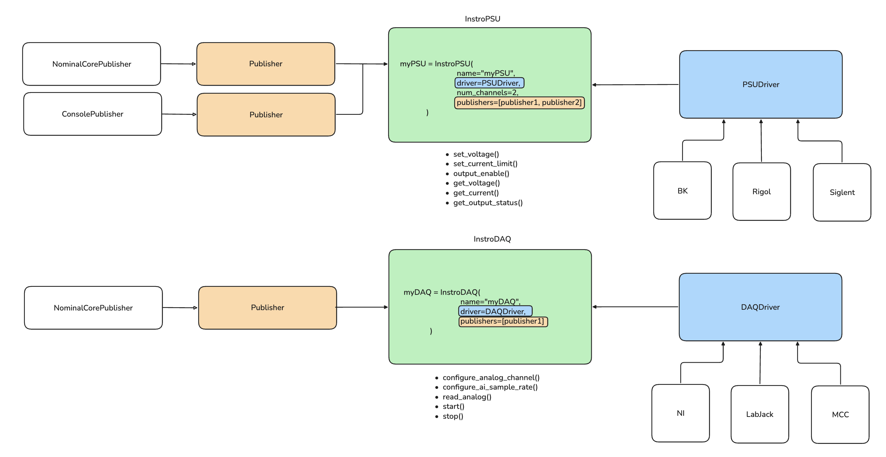

Library#
The Instrument, Measurement, and Command building blocks
This page gives a conceptual overview of how instro is structured.
Instrument#
Instrument is the base class for all instrument types. Its responsibilities include:
Creates and holds the communication interface for the instrument.
Publishing
Measurements and Commandsto any attachedPublishers.Handling background daemons for synchronous instrument communication.
from instro.lib import Instrument
Instrument(
name: str,
publishers: list[Publisher] | None = None,
background_config: BackgroundDaemonConfig | None = None,
legacy_naming: bool = False,
**kwargs,
)
User defined custom instruments should subclass Instrument
Measurements and Commands#
When controlling an Instrument gets and sets return Measurement and Command objects.
A
Measurementis created when reading data from an instrument.
from instro.lib import Measurement
Measurement(
channel_data: dict[str, list[float] | list[str]],
timestamps: list[int],
tags: dict[str, str] | None = None,
)
A
Commandis created when writing commands to an instrument.
from instro.lib import Command
Command(
channel_data: dict[str, float | str],
timestamp: int,
tags: dict[str, str] | None = None,
)
Unlike Measurement, a Command carries a single datapoint per channel (float | str, not list[float]) and a single timestamp. The str option covers categorical commands whose value is not numeric: mode names and relay states such as OPEN / CLOSED. A categorical read (a mode name or state reported back from the instrument) is a string-valued Measurement, not a Command: writes are always Command and always publish to a .cmd channel; reads are always Measurement, whatever the value’s type, and never publish to a .cmd channel.
Parameters#
channel_data: dict[str, list[float] | list[str]]This dictionary maps channel names (or numbers, as strings) to lists of numeric or categorical measurements. A given channel’s list is always one type or the other, never mixed. For example, if your instrument has channels"my_thermocouple1"and"my_thermocouple2", and you collected 10 samples from each,channel_datamight look like:{ "my_thermocouple1": [0.123, 0.124, ...], "my_thermocouple2": [0.223, 0.224, ...], }
timestamps: list[int]A list of timestamps in integer nanoseconds since the Unix epoch, one per measurement sample, aligned with the values inchannel_data. The length oftimestampsshould match the length of each list inchannel_data.tags: dict[str, str] | NoneOptional metadata associated with this measurement acquisition. Common tags include test IDs, operator name, or environmental qualifiers. Useful for search, provenance, and analysis.
High Level Architecture#
Instrument Types / HALs: Distinct classes for each type of instrument (e.g., DAQ, PSU, ELoad, I2C), each providing an opinionated and unified usage model. This design exposes a tailored interface that reflects typical usage patterns, making common workflows consistent across different vendors and models.
Drivers: Vendor- or model-specific drivers that handle low-level communication intricacies. HALs rely on these drivers to implement vendor- or model-specific details within the context of their higher level usage model.
Publishers: Components responsible for recording or transmitting instrument data and commands. For example, streaming measurement data to a dataset. Instruments own attached publishers and close them during teardown.

Backwards-compatible channel naming (legacy_naming)#
Every category instrument accepts a legacy_naming: bool = False keyword at construction. When set to True, the instrument publishes channels under their pre-v1.0 names.
# Default (v1.0): publishes main.ch1.voltage, main.ch1.voltage.cmd, ...
psu_new = InstroPSU(name="main", driver=BK9115(...), num_channels=1)
# Legacy: publishes main.ch1_v, main.ch1_v.cmd, ...
psu_legacy = InstroPSU(name="main", driver=BK9115(...), num_channels=1, legacy_naming=True)
When to use it:
Backwards compatibility. If your dashboards or recorded datasets were keyed on the pre-v1.0 channel names, flip the flag on each instrument as a single-line stopgap while you update downstream consumers.
Scope:
Categories with a v1.0 rename (PSU, ELoad, I2C, DAQ digital channels, and
InstroScope) honor the flag.Categories with no v1.0 rename (DMM, Modbus, DAQ analog/relay) ignore the flag (the published names are unchanged either way).
Limitations:
All-or-nothing per instrument. There is no way to use new names for some channels and legacy for others on the same instance.
legacy_namingis scheduled for removal in v2.0. Plan to migrate downstream consumers within that window.